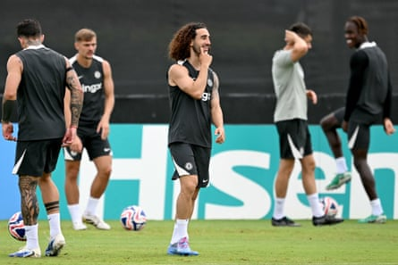

Enzo Maresca said that he will let Pedro Neto decide if he is ready to face Palmeiras after Chelsea excused the winger from training following the death of his friend and international teammate Diogo Jota .
Neto played with Jota at Wolverhampton Wanderers and won the Uefa Nations League alongside the Liverpool and Portugal forward last month.
The mood was sombre at Chelsea’s training camp as they prepared to face Palmeiras in the quarter-finals of the Club World Cup on Friday. Neto was given permission to miss the session and Maresca was unsure if Neto will be in the right frame of mind to play.
“It’s a very sad day,” Maresca said. “I struggle to find words, it is very difficult. You feel a little bit helpless in this situation. I can only say all my love to [Jota’s] family. It’s a big tragedy for them. In terms of Pedro, he is very sad. Probably more than sad. We are close to Pedro to support him.
“Because I didn’t see him in training earlier. It’s completely Pedro’s decision [to play]. I had a chat this morning with Pedro. We support him. Any decision he will take is the correct one.”
Marc Cucurella backed Neto, who has scored three goals during the tournament, to rise to the occasion if he plays.
“The manager and he must decide but it’s important that Pedro feels good,” the Chelsea left-back said. “Football is secondary but it’s a long day tomorrow and whatever they decide will be good. But right now he’s a player in form and I think Pedro can help us in this game.”
Chelsea have rallied around Neto. “In the morning he was sad and it was not his best moment,” Cucurella said. “But we tried to stay together and in the afternoon he was a bit better and I told him that if he’s going to play then he will score because that is destiny. Hopefully we can show his love and all the good friends that we are and dedicate the goal to him.”
Marc Cucurella at Chelsea training ahead of the Club World Cup quarter-final against Palmeiras in Philadelphia.Photograph: Chandan Khanna/AFP/Getty Images
Chelsea also have selection problems in midfield. Moises Caicedo is serving a one-match ban and Maresca revealed that Romeo Lavia, who has not been seen in training this week, is in doubt with a muscle problem.
“We are not sure he can be fit,” Maresca said. “We will try tomorrow. He had small problems at the end of the last game against Benfica. It is just muscular problems and tomorrow we will see if he is fit. Moi is suspended also so we need to find solutions.”
Chelsea have agreed a fee of £48.5m plus add-ons for the Borussia Dortmund winger Jamie Gittens and have added Joao Pedro to their squad after signing the forward from Brighton in a deal worth up to £60m. It remains to be seen if Joao Pedro is ready to feature against Palmeiras.
“Joao Pedro’s situation is a bit strange as he was on holiday,” Maresca said. “Even if he was working it is not the same when you work alone rather than with the team. We are very happy with Joao in the two days he worked with us. We will see if we need him tomorrow.”
The other key subplot to the tie is Willian Estêvão, the 18-year-old Palmeiras winger, taking on his future employers. The Brazil international has been the subject of huge attention given that he joins Chelsea after the Club World Cup.
“Everyone knew this could happen during the negotiations,” Abel Ferreira, the Palmeiras manager, said. “Everyone knew he could play. So he will do what he does. I don’t have to say anything. He has to do his job. He won’t play alone. Nobody plays alone in my team. He will do what he always does. As long as he is playing with us, he has this commitment with us and once he finishes his commitments with Palmeiras, he is free to start with his new club.
“He knows what he needs to do for tomorrow. I hope he gives his best for the owners of Chelsea. It will be an important opportunity for him to show how good he is. We can expect his best. Maybe to score a goal to give a goodbye for our fans, because we helped him. We helped him to grow as a man, as a professional, so it can be a good moment for him to give a goodbye with one amazing game.”
Ferreira, who is without Gustavo Gomez and Murilo in defence, jokingly called on Philadelphians to tap into their patriotism by coming to the game to support his team on the Fourth of July.
“We are the underdogs,” the Portuguese said. “It can be an opportunity for local people to join with us against the English. It can be a good moment. Tomorrow it will be Independence Day, against the English. Join us! Come with us! We need your support.”